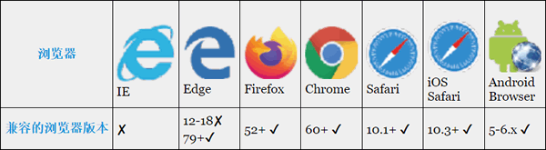
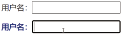
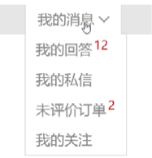

首页 > 编程笔记
CSS :focus-within伪类选择器用法详解
整体焦点伪类 :focus-within 非常实用，且兼容性不错（如下表所示），目前已经可以在实际项目中使用，包括移动端项目和无须兼容 IE 浏览器的桌面端项目。
举个例子：
这是 CSS 选择器世界中很了不起的革新，因为 :focus-within 伪类的行为本质上是一种父选择器行为，子元素的状态会影响父元素的样式。由于这种父选择器行为需要借助用户的行为触发，属于“后渲染”，不会与现有的渲染机制冲突，自然也不会带来性能问题，因此浏览器在规范出现后不久就快速支持了。
另一方面，它可以用于实现完全无障碍访问的下拉列表，即使下拉列表中有其他链接或按钮也能正常访问。例如，要实现一个类似图 2 所示的下拉列表效果。
HTML 结构如下：
可以肯定的是，以后对于这类下拉交互，采用 :focus-within 伪类实现会是约定俗成的标准解决方案。

表 1 focus-within伪类的兼容性
表 1 focus-within伪类的兼容性
:focus-within伪类和:focus伪类的区别
CSS :focus-within 伪类和 :focus 伪类有很多相似之处，那就是伪类样式的匹配离不开元素聚焦行为的触发。区别在于，:focus 伪类样式只有在当前元素处于聚焦状态的时候才匹配，而 :focus-within 伪类样式在当前元素或者当前元素的任意子元素处于聚焦状态的时候均匹配。举个例子：
form:focus {
outline: solid;
}
表示仅当 <form> 元素处于聚焦状态的时候，<form> 元素的 outline（轮廓）才会出现。
form:focus-within {
outline: solid;
}
表示 <form> 元素自身或者 <form> 元素内部的任意子元素处于聚焦状态时，<form> 元素的 outline（轮廓）均会出现。换句话说，子元素聚焦可以使父元素的样式发生变化。这是 CSS 选择器世界中很了不起的革新，因为 :focus-within 伪类的行为本质上是一种父选择器行为，子元素的状态会影响父元素的样式。由于这种父选择器行为需要借助用户的行为触发，属于“后渲染”，不会与现有的渲染机制冲突，自然也不会带来性能问题，因此浏览器在规范出现后不久就快速支持了。
:focus-within伪类实现无障碍访问的下拉列表
:focus-within 伪类非常实用，一方面它可以用在表单控件元素上（无论是样式自定义还是交互布局），例如输入框聚焦时高亮显示前面的描述文字，我们可以不把描述文字放在输入框的后面，按正常的 DOM 顺序即可：
<div class="cs-normal">
<label class="cs-label">用户名：</label><input class="cs-input">
</div>
.cs-normal:focus-within .cs-label {
color: darkblue;
text-shadow: 0 0 1px;
}
效果如下图所示。

图 1 输入框聚焦，前面的文字被高亮显示
图 1 输入框聚焦，前面的文字被高亮显示
另一方面，它可以用于实现完全无障碍访问的下拉列表，即使下拉列表中有其他链接或按钮也能正常访问。例如，要实现一个类似图 2 所示的下拉列表效果。

图 2 带有其他交互的下拉列表效果示意
图 2 带有其他交互的下拉列表效果示意
HTML 结构如下：
<div class="cs-details">
<a href="javascript:" class="cs-summary">我的消息</a>
<div class="cs-datalist">
<a href>我的回答<sup>12</sup></a>
<a href>我的私信</a>
<a href>未评价订单<sup>2</sup></a>
<a href>我的关注</a>
</div>
</div>
我们在父元素 .cs-details 上使用 :focus-within 伪类来控制下拉列表的显示和隐藏，如下：
.cs-datalist {
display: none;
position: absolute;
border: 1px solid #ddd;
background-color: #fff;
}
/* 下拉列表展开 */
.cs-details:focus-within .cs-datalist {
display: block;
}
本例中共有 5 个 <a> 元素，其中一个用于触发下拉显示的 .cs-summary 元素，另外 4 个在下拉列表中。无论点击这 5 个 <a> 元素中的哪一个，都会触发父元素 .cs-details 设置的 :focus-within 伪类样式，因此可以让下拉列表一直保持显示状态；点击页面任意空白处，下拉列表自动隐藏，效果非常理想。可以肯定的是，以后对于这类下拉交互，采用 :focus-within 伪类实现会是约定俗成的标准解决方案。
关注公众号「站长严长生」，在手机上阅读所有教程，随时随地都能学习。内含一款搜索神器，免费下载全网书籍和视频。

微信扫码关注公众号